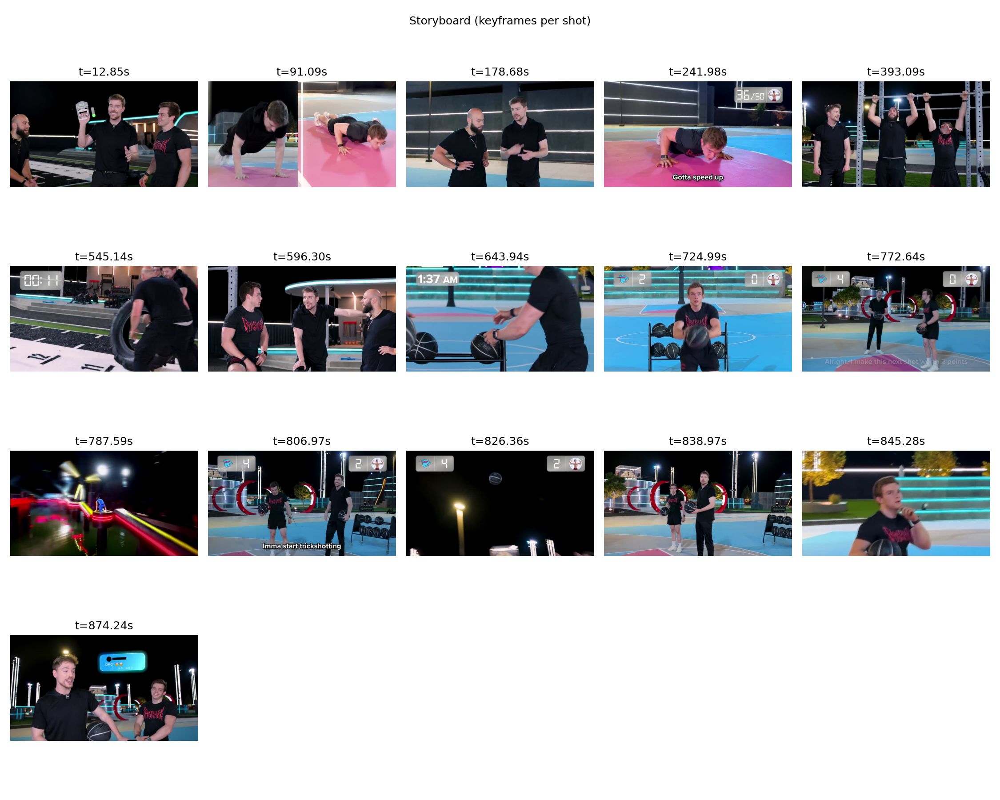
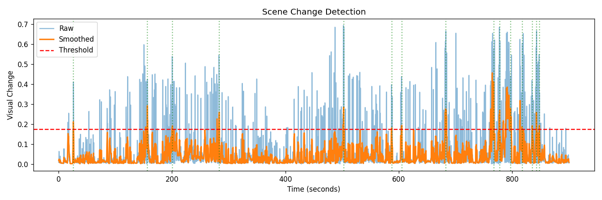

Automatically detect scenes, extract key moments, and generate polished summaries with audio — perfect for YouTube Shorts, TikTok, and social media. Powered by advanced computer vision.
Powerful algorithms combined with an intuitive interface
Advanced visual change detection using color (HSV) and edge analysis to identify distinct scenes
Automatically selects the sharpest, most representative frame from each detected scene
Summary videos keep the original audio track intact using ffmpeg integration
Set maximum summary length — perfect for 60-second YouTube Shorts or TikTok videos
Whisper-powered speech recognition with automatic scene titles generation
Academic-grade evaluation scores and detailed analysis reports for every summary
From upload to polished summary in seconds
Drag & drop your video into the web interface or use the CLI
AI detects scene changes using color histograms and edge detection
Key moments from each scene are selected based on quality scores
Polished summary video with audio, storyboard, and JSON manifest
Real results from a 15-minute video
Visual overview of all detected scenes

Scene detection visualization

Start creating engaging summaries in seconds